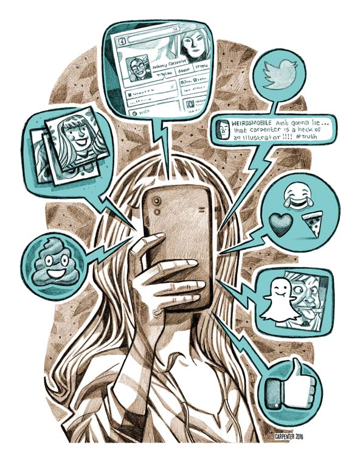

Wandering tentative on phone
One afternoon, 2 day before of my mid-sem paper ,when I was lying on my bed, with the lights turned off and having a exam fear gesture too, I was just scrolling through Insta and suddenly I realized that I was simply wasting my time with no any moral. That’s what our phones have become. An instant escape, and a constant burden. I remember when I got my first phone after joining into college. It was an exciting and surprisingly moving up moment. Not because of the technology, but because of what it meant: Someone at my study thought It was important enough to need one of these.
Over one & half years, though, that pride has fade away. My phone, once a source of liberation .I could explore & check on anything or i can google any words or non_understable things & much more ,which meant I could spend more time out doing things — eventually became a weight that tied me down. Instead of making me better at my study, it started preventing me to more focused,more dedicated,more creative time. Instead of helping me have fun, it was making me miserable.
It’s there: in your pocket. On the desk. In the cup holder of the car.You want to use it. Just grab it and alleviate the boredom or discomfort. Might as well check the headlines instead of struggling to type words on a blank screen. And why stay in this tense argument with anyone when you can see what’s new around us through a little medium!!
Time spent on activities on a smartphone by 13-17-year old teens.
| Online Video | 71% |
| Messaging apps | 52% |
| social networking | 51% |
| play games | 42% |
Make your own strategies,which might help you to get rid of phones. Some of them are easy. Others are tougher, and you’ll probably think some of them are nuts. Maybe they are. But they work.
It’s our life and it’s ticking away every second.
We need to be there for it, not staring at a screen.
